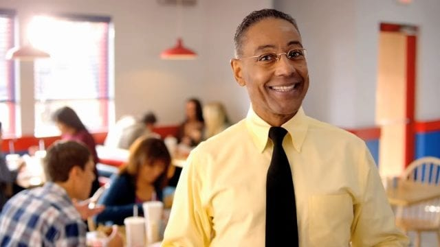

Welcome to the Los Pollos Hermanos
Hello! And welcome to the Los Pollos Hermanos family. My name is Gustavo, but you can call me "Gus". I am thrilled that you'll be joining our team. Each and every day, we serve our customers exceptional food, with impecable service. We take pride in everything that we do. And after this 10 week online seminar, I'm sure you'll fit right in. I like to think I see things in people. To begin, I'd like to talk about the cornerstone of the Los Pollos Hermanos brand. Communication. As an employee of Los Pollos Hermanos, you set the tone for the entire dining experience. Be mindful of what your words, and behavior communicate to our guests. Always be aware of your posture, remember to stand up straight. Your customers and your back will thank you for it. Put effort into your appearance, all employees are required to dress appropriately. Keep your uniform clean, and pressed. If you want respect, you must look respectable. Speak in complete sentences, we never use one word greetings like "Hey" or "Yeah?" Always make eye contact, and finally, whenever you're with a customer or not, remain composed. Inside, you can be thinking about your homework, or friends, or your side business, but no one should ever know it. Because at Los Pollos Hermanos, someone... Is always watching. So dont forget to smile! Thats all for today, see you next time when we'll be discussing cleanliness.
To make a chicken, you need:
- 1 1/2 lb. boneless skinless chicken breasts
- Kosher salt
- Freshly ground black pepper
- 2 tbsp. extra-virgin olive oil, divided
- 1 small shallot, diced
- 8 oz. baby bella mushrooms, sliced
- 2 cloves garlic, minced
- 2 tsp. fresh thyme leaves
- 1 tsp. dried oregano
- 1 c. low-sodium chicken broth
- 1 1/4 c. half and half
- Pinch crushed red pepper flakes
- 1 (17-oz.) package gnocchi
- 3/4 c. shredded mozzarella
- 1/2 c. freshly grated Parmesan
- 3 c. packed baby spinach